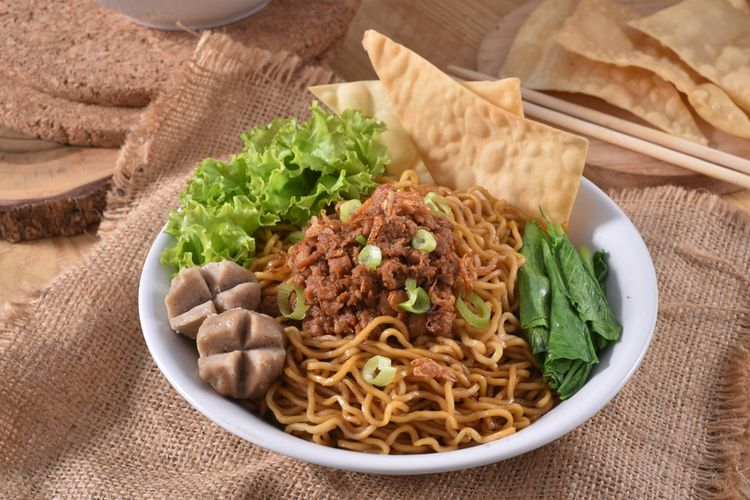

Mie
Ayam
Bahan Utama
500 gram mie telur basah
250 gram daging fillet ayam, rebus dan potong kecil-kecil
100 ml minyak ayam
Kuah kaldu secukupnya
Kecap asin secukupnya
Cara Membuat
Siapkan mangkuk secukupnya.
Masukkan 2 sendok makan minyak ayam yang telah kamu buat dan 1 sendok makan kecap asin dalam mangkuk. Aduk rata dan sisihkan.
Rebus mie dan sawi hijau yang telah dipotong-potong sesuai selera sampai matang. Angkat dan tiriskan.
Masukkan mie dan sawi yang sudah matang ke dalam mangkuk.
Tuang kuah kaldu sesuai selera dan aduk rata.
Baru taruh topping daging ayam, pangsit, bawang goreng, dan potongan daun bawang secukupnya.
Mie ayam siap disajikan dengan saus dan sambal selagi hangat.
